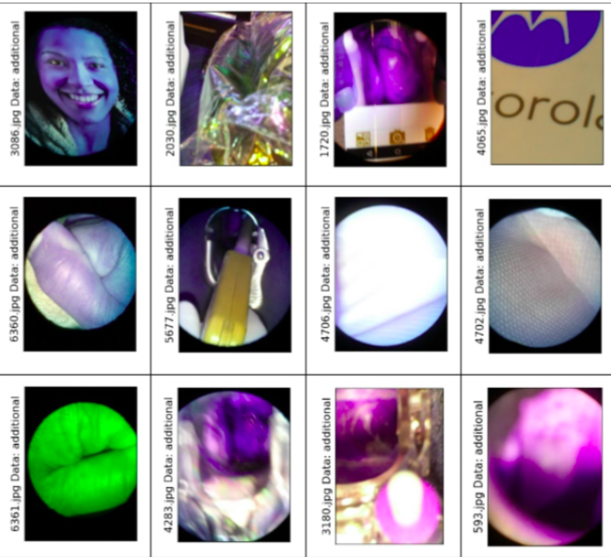

Cleaning dataset is a prior preprocessing step in training any deep learning-based task. Our experiments and testing heavily relies upon the Cervical cancer dataset collected from Kaggle competition. Using our Deep learning based methods we are able to clean almost all outliers from the dataset which significantly boosted the performance of downstream classification task.
